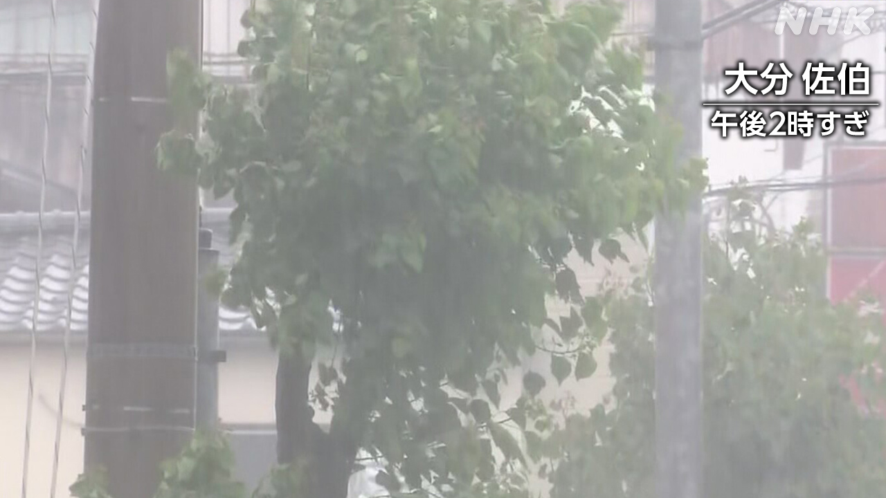

最新ニュース
1️⃣ 台風6号 たくさんの雨や強い風に気をつけて

台風6号は、いま九州の南の海を進んでいます。
台風に近い九州や四国地方などでは、とても強い雨が降っています。九州の宮崎県では、川の水が増えて危険になっている所があります。鹿児島県や長崎県などでは、何かにつかまらないと立っていることができないような強い風が吹きました。
気象庁によると、台風6号はこれから、四国地方や近畿地方、東海地方、関東地方の太平洋に近いところを通りそうだということです。
風が強くなって海では波も高くなります。同じ場所で雨がたくさん降って急に危険になる心配があります。雨は台風から遠い場所でもたくさん降るかもしれません。気をつけてください。
2️⃣ 強い風でけがをした 交通の情報にも気をつけて
台風6号で、人がけがをしたり家の屋根が壊れたりしています。
沖縄県と鹿児島県で、18人が強い風で転んで軽いけがをしました。屋根が壊れたり窓ガラスが割れたりした建物もあります。
2日は、400便以上の飛行機が飛びませんでした。
3日は、羽田空港などで370便以上（2日午後５時現在）の飛行機が飛ばないことが決まっています。
東海道新幹線は、3日は朝から予定どおり運転できないかもしれません。
関東地方では、3日運転しない電車があります。交通の新しい情報をよく調べてください。
3️⃣ また熊が人を襲った 福島市で4人けが
人が住んでいるまちの中で、また熊が人を襲いました。
警察によると、2日の朝、福島市の工場に熊が出て2人を襲いました。熊は、そのあと近くの事務所や家で、別の2人を襲いました。4人はけがをして病院に運ばれました。警察などは、熊が事務所の近くにいると考えています。
秋田市の山では、73歳の女性が家の近くで亡くなっているのが見つかりました。
近くに熊がいたため、ハンターが熊を撃ちました。警察は熊が女性を襲ったと考えています。
4️⃣ 「痴漢に困ったらDigiPoliceというアプリを使って」
電車の中などで他の人の体を触るなどする悪い人を「痴漢」と言います。
夏になると痴漢に困る人が増えるため、警視庁は、いろいろな活動をしています。
東京の新宿駅で1日、警察官などが、学校や会社に行く人たちにDigiPoliceというアプリを紹介して、痴漢に困ったら使ってほしいと言いました。
このアプリを使うと、スマートフォンに「痴漢です」という字が大きく出ます。スマートフォンから「やめてください」という声が出て、まわりの人に知らせることができます。
大学生の女性は「声を出すことができなかったらアプリを使いたいです」と話しました。
- 〜ている / 〜でいる
- 〜ても / 〜でも
- 〜など
- 〜や〜など
- 〜がある / 〜がいる
- 〜になる
- 〜ところ
- 〜ことができる
- 〜ような
- 〜こと
- 〜によると
- 〜から
- 〜という
- 〜そうだ
- 〜かもしれない / 〜かもしれません
- 〜てください / 〜でください
- 〜たり〜たりする
- 〜以上
- 〜予定
- 〜中
- 〜後 / 〜あと
- 〜ため
- 使役 (〜させる / 〜せる)
vebaev.github.io
Generated: 2026-06-02 14:04:33 UTC